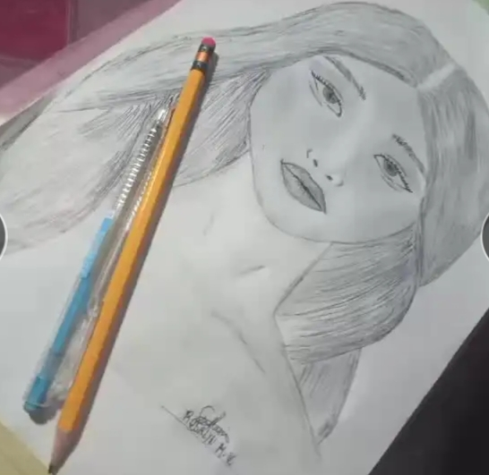
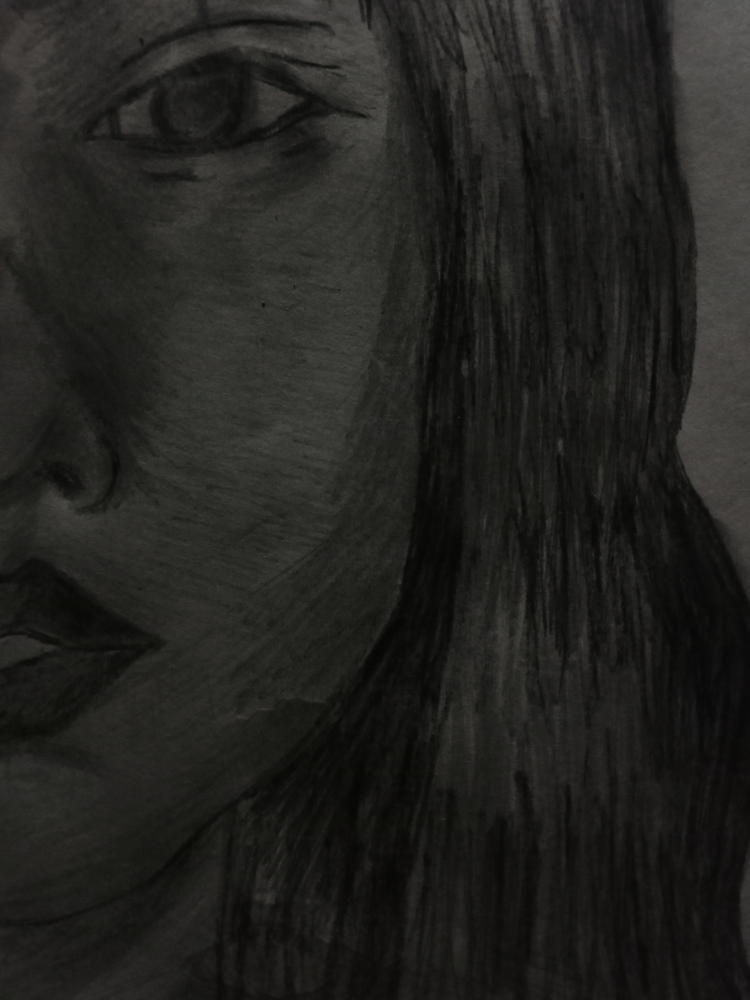

Rosalyn Moaña
My name is Rosalyn Moaña, oldest daughter of Benjamin Villasin Jr. and Liezl Moaña-Villasin. I'm currently studying at Eastern Visayas State University-Carigara Campus (EVSU-CC), pursuing a degree in Bachelor of Science in Information Technology (BSIT). I'm based in Barugo, Leyte.
Here's a brief overview of my educational background:
• I attended Celistino De Guzman Memorial National High School (CDMNHS) in Barugo, Leyte for 3 years.
• I finished my Junior High School years at Quezon Hill National High School in Baguio City.
• I graduated from San Miguel National High School (SMNHS) in San Miguel, Leyte.
• I completed my elementary education at Duka Elementary School.
I'm the first daughter and second child of six siblings: Bryan Villasin, Ronalyn Villasin, Angela Villasin, Jen Rose Villasin, Benjamin Villasin III, and myself.
Singing
I started singing when I was 3, thanks to my mom's love for music. Even now, music is still my go-to comfort when I'm feeling down, and it makes happy moments even more special.
I started drawing when I was 4, inspired by the talented seniors in my church. I loved bringing my imagination to life on paper, but somehow I lost interest around age 10. Even though I only draw for school projects now, it's nice to know that the skill hasn't completely left me!
My first painting
 Dancing isn't really a natural talent for me, but I picked it up in school thanks to programs and Zumba contests. Seeing my classmates dance sparked my interest, and I ended up learning from them.
I'm a huge fan of dramas and movies, and I always find myself feeling the characters' emotions. Watching them has actually helped me improve my acting skills, and I always try my best in role-plays at school.
•Watching kdramas
•Singing
•Sleeping
•Reading wattpad
•Eating
If you have any questions, you can ask me by sending a private message!
| Email (Gmail): | rosalynvillasin8@gmail.com |
| Phone Number: | 09703580058 |
| Facebook: | Ro Sa Lyn |
| TikTok: | tiktok.com/@rosalynm.villasin |